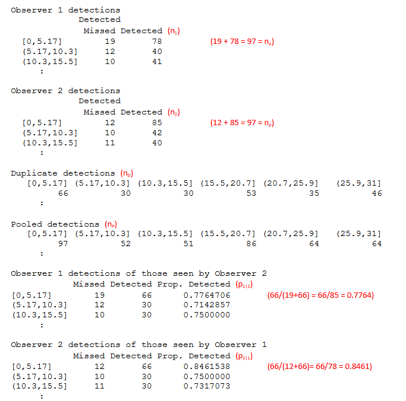
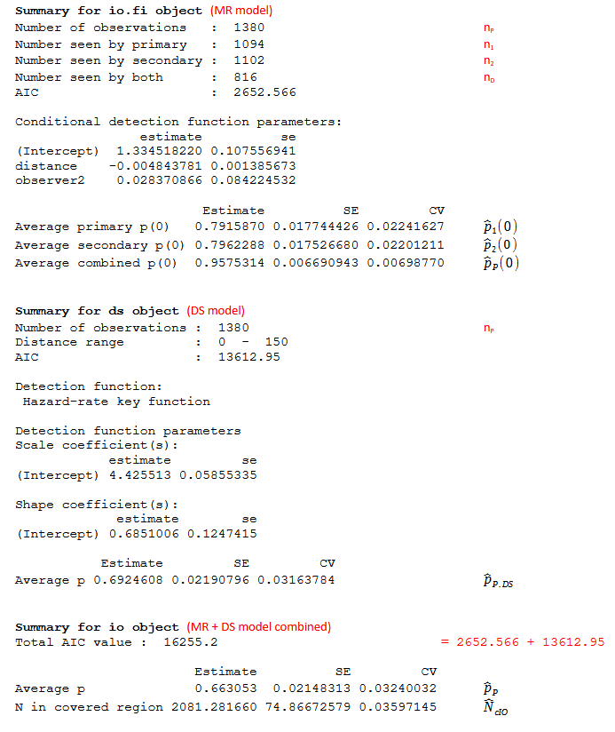
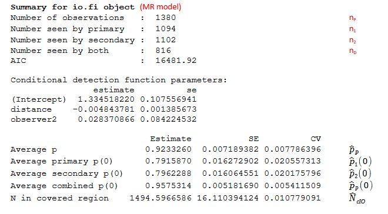
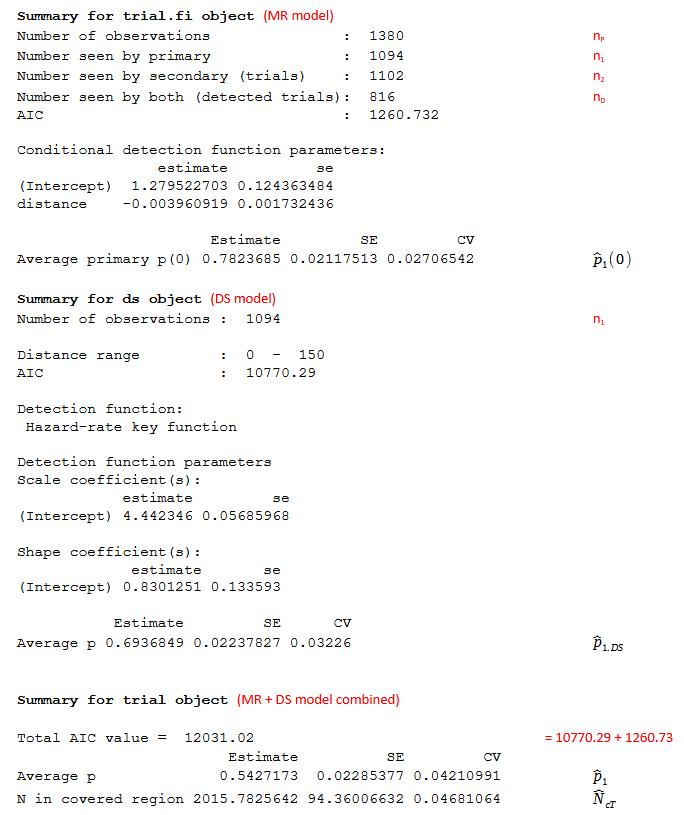
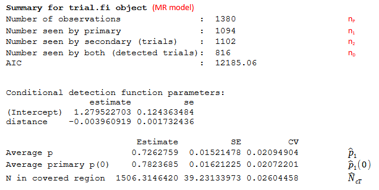

Interpreting MRDS output: making sense of all the numbers
Introduction
The mrds package (J. Laake et al. (2024)) was written to allow the user to estimate abundance from a mark-recapture distance sampling (MRDS) survey (i.e. taking account of imperfect detection both on and away from the transect centreline or point). On running an analysis lots of output is generated and wading through all the numbers can be a bit daunting for a first-time user. This document aims to help the user understand the output and find key bits of information. Some knowledge of conventional distance sampling (Buckland et al. (2001)) and MRDS is assumed; for details on undertaking a MRDS analysis see (Burt et al., 2014).
The mrds package can be used in R R Core Team (2024) directly or via program Distance for Windows 8.0 (Thomas et al. (2010)). The same output is available on both software platforms but in Distance for Windows output is generated automatically to a ‘Results’ tab and in R the user is required to do a bit of work to obtain the information (e.g. using the summary and plot commands).
The example data used here is taken from a survey of faecal pellets (Jenkins & Manly (2008); Burt et al. (2014), Example 1). The Distance for Windows project of these data is available to download from here The focus of this study was to estimate the probability of detection of pellet groups rather than estimating density or abundance of animals. Output from an analysis of these example data is annotated (in red text) in the following sections but first terms and quantities are defined.
This is a work in progress; comments and suggestions to improve the document are welcome.
Glossary
- Covered region
- Region covered during the survey i.e. \(2wL\).
- Study region
- Area of interest.
- Detected object
- This could be a group (cluster) of objects and group size is recorded or individual objects if cluster size is one for all objects.
- Observer
- One or more people performing the same role or could be an acoustic or digital observer.
- Observer 1
- Also known as the Primary observer in a trial configuration setup.
- Observer 2
- Also known as the Secondary observer in a trial configuration setup.
- DS model
- Distance sampling model; fitted assuming \(g(0)=1\) i.e. certain detection on the transect centreline. This could be a conventional distance sampling model (Buckland et al. (2001)) or a multiple covariate distance sampling model Marques & Buckland (2003).
- MR model
- Mark-recapture model; logistic regression model \(p_{j|3 - j}\left( y,\underline{z} \right) = \frac{exp(\beta_{0} + \beta_{1}y + \sum_{k = 1}^{K}{\beta_{k + 1}z_{k})}}{1 + exp(\beta_{0} + \beta_{1}y + \sum_{k = 1}^{K}{\beta_{k + 1}z_{k})}}\)
where j (j=1 or 2) is observer, the β’s are model coefficients, y is perpendicular distance and z are covariates.
- IO configuration
- Independent observer configuration; both observers search independently of the other observer. The probability of detection by either, or both, of the observers is of interest.
- Trial configuration
- One observer (often called the primary) searches independently. A second observer (often called the tracker) searches for animals, beyond the search distance of the primary, and tracks them to determine more easily if the primary also detects them. The probability of detection of the primary observer is of interest.
- Full independence
- Detections between observers are assumed to be independent at all perpendicular distances. This assumption requires only a MR model to be fitted.
- Point independence
- Detections between observers are assumed to be independent only at the point where perpendicular distance is zero (i.e. on the transect centreline). This assumption requires both a DS and MR model to be fitted.
Notation
Observed values
- n1
- total number of detected objects seen by observer 1 (also Primary observer)
- n2
- total number of detected objects seen by observer 2 (also Secondary observer)
- nD
- total number of detected objects seen by both observers (Duplicate detections)
- nP = n1+n2-nD
- total number of detected objects (Pooled detections)
- p1|2 = nD/n2
- proportion detected by observer 1 of those seen by observer 2
- p2|1 = nD/n1
- proportion detected by observer 2 of those seen by observer 1
Estimated values
The estimated probabilities are the probabilities of detection for detected objects. The model used to estimate them is given in parentheses.
- \({\widehat{p}}_{j}(0)\)
- (MR model) Estimate of probability of detection (of objects) on the trackline for observer j (j=1 or 2). If the MR model is of the form \({\widehat{p}}_{j|3 - j}(y) = \frac{exp({\widehat{\beta}}_{0} + {\widehat{\beta}}_{1}y)}{1 + exp({\widehat{\beta}}_{0} + {\widehat{\beta}}_{1}y)}\) i.e. no covariates (except distance) then \({\widehat{p}}_{j|3 - j}(0) = \frac{exp({\widehat{\beta}}_{0})}{1 + exp({\widehat{\beta}}_{0})}\). Similar calculations hold if observer is included (with the coefficient for observer included) but if other covariates are included, then the function is averaged over all covariates and a more complicated formula is used J. L. Laake & Borchers (2004).
- \({\widehat{p}}_{P}(0)\)
- (MR model) Estimate of probability of detection on the trackline (for both observers combined). When the MR model is simple (i.e. only contains covariates for distance (and/or observer in an IO configuration)), then \({\widehat{p}}_{P}(0) = {\widehat{p}}_{1}(0) + {\widehat{p}}_{2}(0) - {\widehat{p}}_{1}(0){\widehat{p}}_{2}(0)\). This equation does not hold when other covariates are included in the MR model; in this case, the intercept is obtained by averaging over all covariates (J. L. Laake & Borchers (2004)).
- \({\widehat{p}}_{P.DS}\)
- (DS model) Estimate of probability of detection (over all distances) for both observers pooled
- \({\widehat{p}}_{1.DS}\)
- (DS model) Estimate of probability of detection (over all distances) for observer 1
- \({\widehat{p}}_{P}\)
- Estimate of probability of detection (over all distances) for both observers pooled taking into account imperfect detection on the trackline. Under the point independence assumption \({\widehat{p}}_{P} = \ {\widehat{p}}_{P}(0).{\widehat{p}}_{P.DS}\)
- \({\widehat{p}}_{1}\)
- Estimate of probability of detection (over all distances) for observer 1 taking into imperfect account detection on the trackline. Under the point independence assumption \({\widehat{p}}_{1} = \ {\widehat{p}}_{1}(0){\widehat{p}}_{1.DS}\)
- \({\widehat{N}}_{cIO} = \frac{n_{P}}{\widehat{p}}\)
- Estimated number of groups in the covered region for IO configuration
- \({\widehat{N}}_{cT} = \frac{n_{1}}{{\widehat{p}}_{1}}\)
- Estimated number of groups in the covered region for Trial configuration
- \(\widehat{N}\)
- Estimated number of individuals in the study region
- \({\widehat{N}}_{g}\)
- Estimated number of groups, or clusters, in the study region
- \(E\left\lbrack \widehat{s} \right\rbrack = \frac{\widehat{N}}{{\widehat{N}}_{g}}\)
- Expected group size
Output from MRDS
As mentioned previously, output in Distance for Windows goes to the Results tab. In R, the user needs to request model output using summary and plot commands. The exact information provided in the output will depend on the observer configuration and the independence assumption used. Here, we follow the order of the output used in Distance for Windows results tab.
Summary of the observations
The numbers of detected objects are tabulated and also plotted in histograms. The tabulated data in Distance for Windows is found on the Observation/Summary tab and the histograms are on the Observation/Plot tab. In R use det.tables(ddfmodel) to list these tables (for a fitted MRDS model called ddfmodel) and to plot the histograms use plot(det.tables(ddfmodel)).
The tabulated data consist of the numbers of objects detected in each perpendicular distance interval used for the histograms for observer 1, observer 2, pooled and duplicate detections. This information is useful because it illustrates the data that underpin the fitted models. Table 1 shows an example of tabulated data for three distance intervals (there are many more intervals in the actual data) and provides a summary of the key bits of information that can be found in these tables.
The data used for the histograms of the number of objects are described in Table 2a.
Detection function summary
In Distance for Windows, the detection function(s) is summarised on the Detection Fct/Summary tab: in R use summary(ddfmodel). The estimated coefficients of the fitted models are listed along with the probabilities of detection. The information included in the output depends on the configuration and independence assumption chosen:
- for an IO point independence model see Figure 1;
- for an IO full independence model see Figure 2;
- for a trial point independence model see Figure 3 and
- for a trial full independence model see Figure 4.
The detection function plots are described in Table 2b. In R use plot(ddfmodel). The intercepts of the fitted models are also given in Table 2a.
Density and abundance estimates
Density and abundance estimates (if requested) are found in Distance on the ‘Density Estimates and associated quantities’ tab. In R, data frames containing information on strata (region.data), transects (sample.data) and observations (obs.data) are required as input to obtain density and abundance estimates using the dht function i.e. dht(ddfmodel,region.data,sample.data,obs.data). These data link objects (detections) to transects and transects to survey regions and provide data on search effort and area of survey strata.
Summary data and estimates (density and abundance) are provided for groups (clusters) and individuals and also expected group size for each strata. In ‘Summary statistics’ (for either clusters or individuals) the number of objects (n) will depended on whether an IO configuration (nP) or a trial configuration (n1) is selected.
Table 1 Observation summary tables: a) key information extracted from b) example output. The symbol ‘:’ indicates that there are more distance intervals in the actual data.
- Summary of key information for three distance intervals and on which Results tab the information is found in Distance for Windows.
| Interval | n1 | n2 | nD | nP | p1|2 | p2|1 | Results tab |
|---|---|---|---|---|---|---|---|
| [0, 5.17] | 78 | 85 | 66 | 97 | 0.776 | 0.846 | Observation/ Summary |
| [5.17, 10.3] | 40 | 42 | 30 | 52 | 0.714 | 0.750 | |
| [10.3, 15.5] | 41 | 40 | 30 | 51 | 0.750 | 0.731 | |
| : | |||||||
| Total | 1094 | 1102 | 816 | 1380 | 0.7401 | 0.7451 | Detection Fct/Summary |
1 Not given in Detection function summary – these are Petersen estimates
- Example output

Table 2 Information plotted for each observer configuration (IO and Trial). A dash indicates that figure is not plotted for that observer configuration.
- Observation/Plot tab
| Summary plot # | Histogram colour | Numbers of objects for who? | ||
|---|---|---|---|---|
| IO | Trial | Black | Blue | |
| 1 | 1 | nP | n1 | Pooled and observer 1 |
| 2 | 2 | nP | n2 | Pooled and observer 2 |
| 3 | 3 | nD | Duplicates | |
| 4 | - | nP | Pooled | |
| 5 | 4 | n2 | nD | Observer 2 and duplicates |
| 6 | - | n1 | nD | Observer 1 and duplicates |
- Detection Function/Plot tab
The points on the plots are estimated values for individual detections and the line is the average value (taking into account all covariates in the model).
|
Detection probability plot # |
Histogram | Which model used for independence assumption? | Intercept of the line is at? | ||
|---|---|---|---|---|---|
| IO | Trial | Point | Full | ||
| 1 | 1 | Scaled n1 | DS model | MR model | p̂1(0) |
| 2 | - | Scaled n2 | DS model | MR model | p̂2(0) |
| 3 | - | Scaled nP | DS model | MR model | p̂P(0) |
| 4 | - | Scaled nD | DS model | MR model | ? |
| 5 | 2 | p1|2 | MR model | MR model | p̂1(0) |
| 6 | - | p2|1 | MR model | MR model | p̂2(0) |



